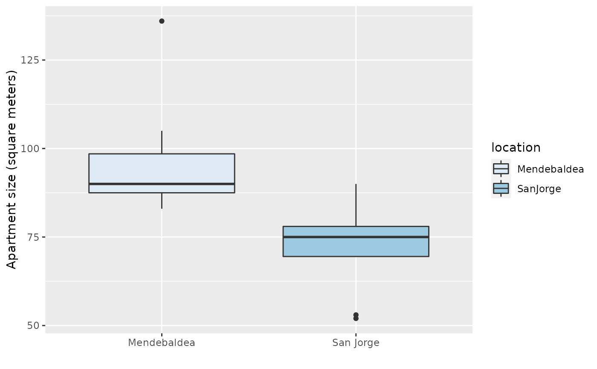
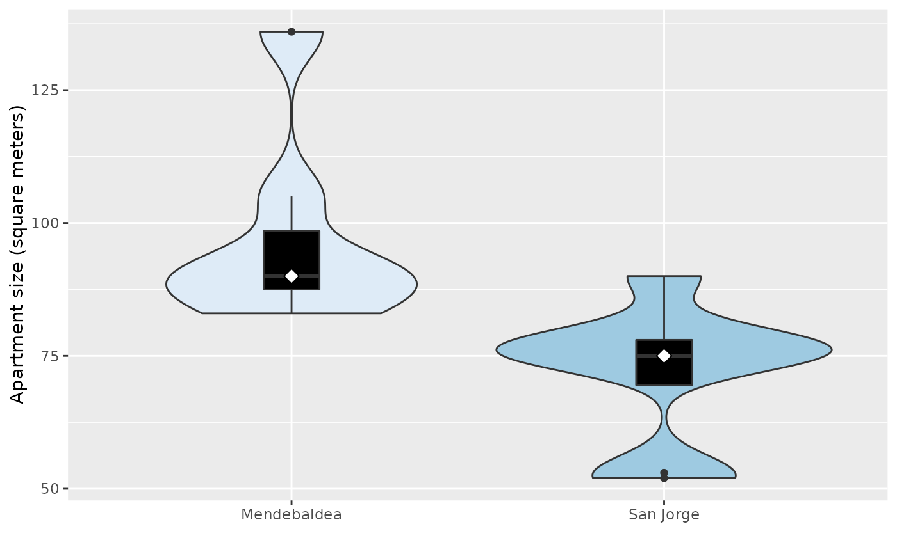
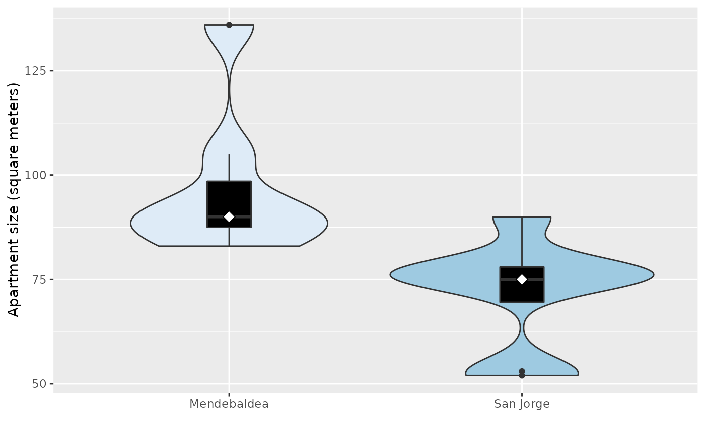
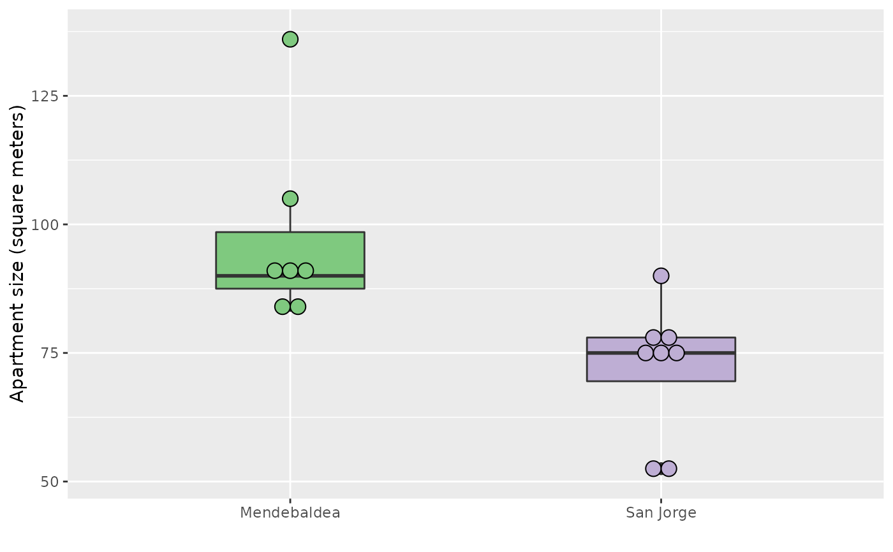
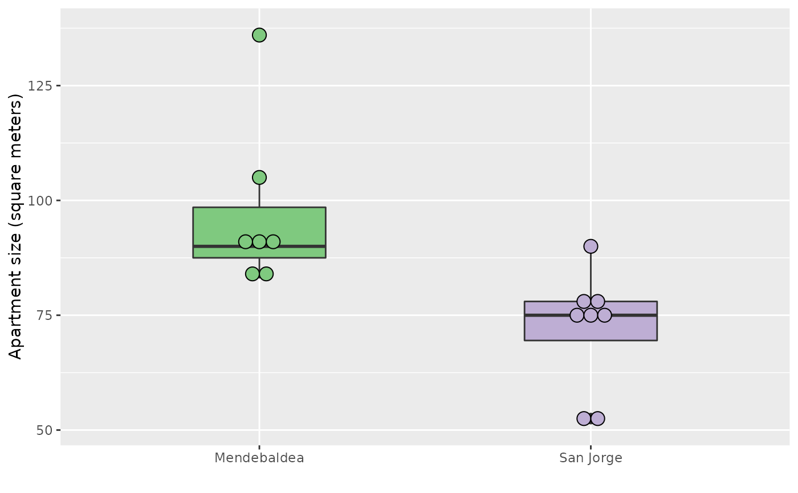

Size of apartments in Mendebaldea, Spain, and San Jorge, Spain
APTSIZEFormat
A data frame with 15 observations on the following two variables:
size(apartment size in square meters)location(factorwith two levelsSanJorgeandMendebaldea)
References
Ugarte, M. D., Militino, A. F., and Arnholt, A. T. 2015. Probability and Statistics with R, Second Edition. Chapman & Hall / CRC.
Examples
p <- ggplot(data = APTSIZE, aes(x = location, y = size, fill = location)) +
labs(x = "", y = "Apartment size (square meters)") +
scale_x_discrete(breaks = c("Mendebaldea", "SanJorge"),
labels =c("Mendebaldea", "San Jorge")) + scale_fill_brewer()
p + geom_boxplot()

# remove the legend
p + geom_boxplot() + guides(fill = "none")
 # violin plot
p + geom_violin(scale = 'area') + guides(fill = "none")
p + geom_violin(scale = 'count') + guides(fill = "none")
p + geom_violin() + geom_boxplot(width = 0.15, fill = 'black') + guides(fill = "none") +
stat_summary(fun = median, geom = "point", fill = "white", shape = 23, size = 3)

# dotplot
p + geom_dotplot(binaxis = "y", stackdir = "center", binwidth = 3) +
guides(fill = "none")
# violin plot
p + geom_violin(scale = 'area') + guides(fill = "none")
p + geom_violin(scale = 'count') + guides(fill = "none")
p + geom_violin() + geom_boxplot(width = 0.15, fill = 'black') + guides(fill = "none") +
stat_summary(fun = median, geom = "point", fill = "white", shape = 23, size = 3)

# dotplot
p + geom_dotplot(binaxis = "y", stackdir = "center", binwidth = 3) +
guides(fill = "none")
 p + geom_boxplot(width = 0.4) + geom_dotplot(binaxis = "y", stackdir = "center",
binwidth = 3) + guides(fill = "none") + scale_fill_brewer(type = "qual", palette = 1)
#> Scale for 'fill' is already present. Adding another scale for 'fill', which
#> will replace the existing scale.

# base graphics
boxplot(size ~ location, data = APTSIZE, col = c("red", "yellow"),
ylab = "Apartment size (square meters)")
p + geom_boxplot(width = 0.4) + geom_dotplot(binaxis = "y", stackdir = "center",
binwidth = 3) + guides(fill = "none") + scale_fill_brewer(type = "qual", palette = 1)
#> Scale for 'fill' is already present. Adding another scale for 'fill', which
#> will replace the existing scale.

# base graphics
boxplot(size ~ location, data = APTSIZE, col = c("red", "yellow"),
ylab = "Apartment size (square meters)")